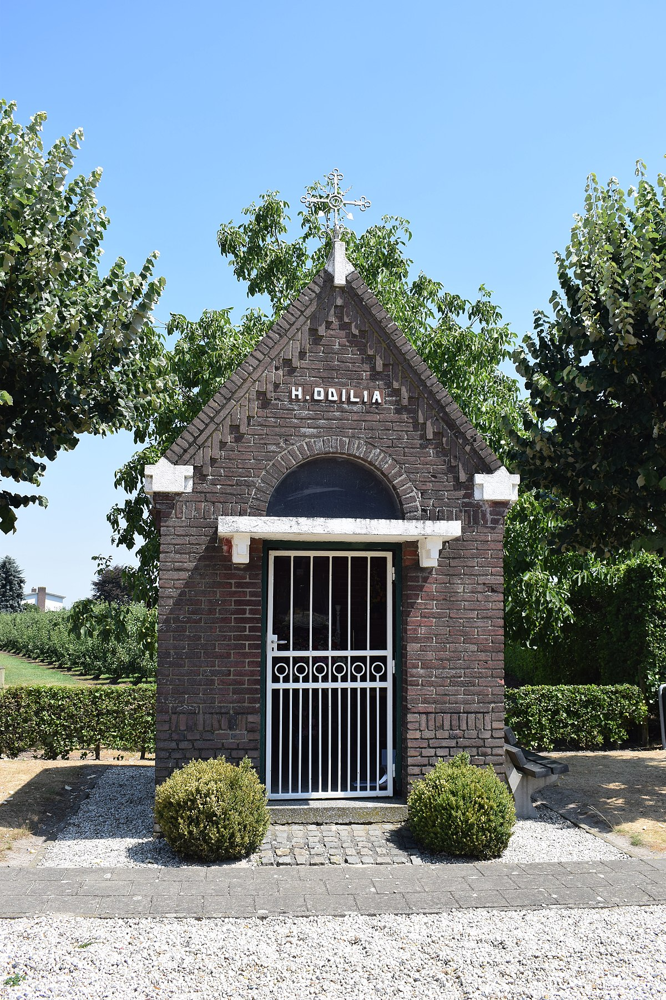
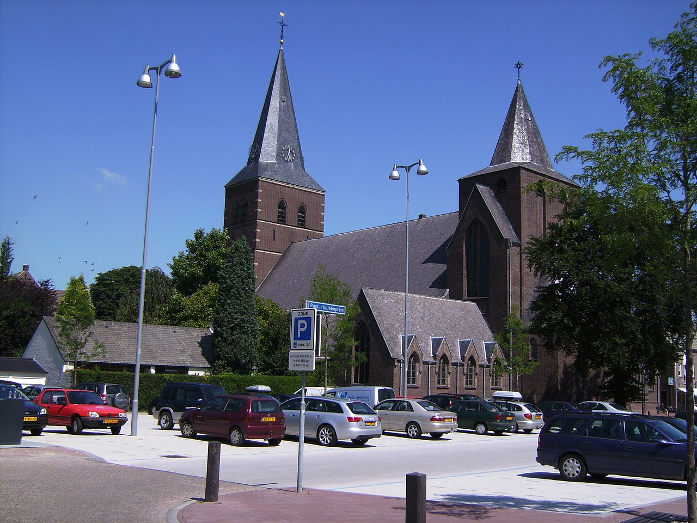

 De Sint-Odiliakapel is een kapel in Panningen in de Nederlandse gemeente Peel en Maas. De kapel staat aan de splitsing van de Beekstraat met de Zandbergweg aan de noordoostrand van het dorp. De kapel is gewijd aan de heilige Odilia van de Elzas.In 1864 werd de kapel gebouwd. Jaarlijks diende de kapel met de processie als rustaltaar. Vanaf de jaren 1960 raakte de kapel langzaam in vergetelheid. In 1984 werd de kapel gerestaureerd en op 27 juli 1984 opnieuw ingezegend.
 Het is een driebeukige kruisbasiliek met westtoren en forse vieringtoren. De ingangspartij met drie rondbogige deuren is imposant. Hierboven verheft zich de westtoren die gedekt wordt door een ingesnoerde naaldspits en die geflankeerd wordt door twee kapellen. Eugène Laudy vervaardigde in 1954 de glas-in-loodramen in de devotiekapel. Enkele ramen die dorpsgezichten van Panningen tonen zijn van vóór de oorlogsschade, uit de jaren 30 van de 20e eeuw en van de hand van J. Mulders uit Kevelaer. Boven de middelste toegangsdeur bevindt zich een beeld van de Moeder der Smarten van omstreeks 1860. Het interieur kenmerkt zich door het gebruik van paraboolbogen, vaak uitgevoerd in schoon en kleurrijk metselwerk. In de Mariakapel troont het miraculeuze gepolychromeerde Mariabeeld uit 1630, en in reliëf zijn daar de zeven Smarten van Maria uitgebeeld. Uit het eerste kwart van de 16e eeuw stamt een beeld, voorstellende Sint-Anna te Drieën. De kerk en een deel van de inventaris is geklasseerd als Rijksmonument.